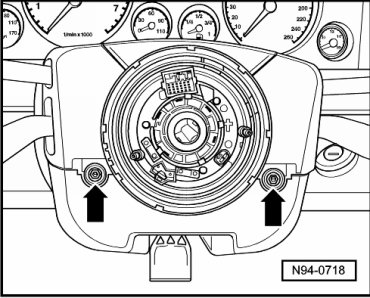
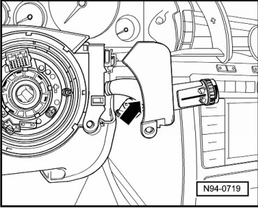
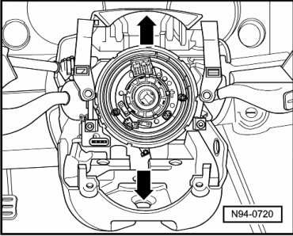
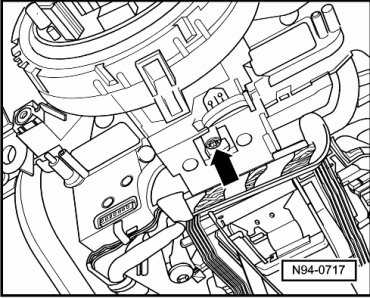
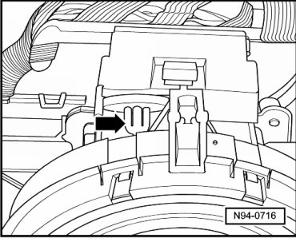
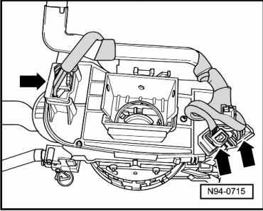
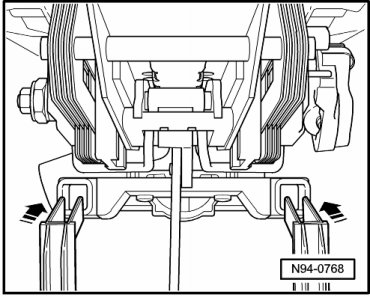

Steering Column Switch
Steering Column Switch
Special tools, testers and auxiliary items required
• Release lever (T10039)
Removing
• Wheels must be located in straight ahead position.
• Airbag Spiral Spring/Return Spring With Slip Ring (F138) and Steering Angle Sensor (G85) must not be twisted out of center position during removal.
• Airbag Spiral Spring/Return Spring With Slip Ring (F138) and Steering Angle Sensor (G85) remain on steering column switch during removal.
- Using electric or mechanical adjustment mechanism, drive steering wheel out completely and move to lowest position.
CAUTION!
When disconnecting battery, procedure must always be followed as described in the repair information --> [ Battery, with Auxiliary Battery or Two-Battery Layout, Disconnecting and Connecting ] Battery, with Auxiliary Battery or Two-Battery Layout, Disconnecting and Connecting. Not adhering to sequence will result in the deactivation of Main Battery Switch -E74- and subsequent damage to electrical system components.
- Disconnect battery --> [ Battery, One-Battery Layout, Disconnecting and Connecting ] Battery, One-Battery Layout, Disconnecting and Connecting.
- Remove the driver airbag Removal and Installation.
- Remove steering wheel.
- Remove screws - arrows -.

- Pry trim panel - arrow - at right out of locking mechanisms using wedge (T10039/1) and slide outward.

- Trim panel at left is arranged symmetrically and must be pried out of locking mechanisms using wedge (T10039/1) and pushed outward.
• Do not disassemble the covers.
- Move upper trim - arrow - of steering column switch upward and remove trim.

- Move lower trim - arrow - of steering column switch downward and remove trim.
- Remove hex socket head bolt - arrow -, beneath steering column switch.

- Remove the steering column switch.
- Press the retaining clip off from the wiring harness - arrow -.

- Disconnect harness connectors - arrows - from steering column switches.

Installing
Install in reverse order of removal, noting the following:
- Tighten the hex socket head bolt - arrow - to the tightening specification --> [ Steering Column Switch ] [1][2]Combination Switch.
- Guide in the lower steering column switch cover as shown - arrows -.

- Install steering wheel Removal and Installation.
- Install airbag unit on driver side.